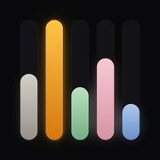

KanauKanau Lite 1.1 (18) के अनुसार
Kanau Lite एक मुफ़्त ऐप है, जो iPhone या iPad को एक लाइट बना देता है। यह कंसोल से Art-Net या sACN पर भेजा गया DMX लेता है और स्क्रीन, पीछे की लाइट और कंपन का रंग और चमक चलाता है। खाता बनाने की ज़रूरत नहीं है और कोई विज्ञापन नहीं है।
कंसोल के बिना आप CONTROL में चमक और रंग तय करके लाइट को हाथ से जला सकते हैं। FX & MEDIA और ULTIMATE मोड में स्क्रीन पर चलते हुए पैटर्न और आपकी अपनी तस्वीरें और वीडियो भी दिखाए जा सकते हैं।
जब तक आप START नहीं दबाते, DMX आने पर भी स्क्रीन नहीं जलती। कंसोल के बिना जलाने के लिए चरण 3 की जगह पैनल के ऊपर CONTROL दबाएँ, चमक और रंग तय करें और START दबाएँ (CONTROL देखें)।
पैनल स्क्रीन के नीचे से खुलता है, और स्क्रीन का ऊपरी तिहाई हिस्सा अब भी लाइट दिखाता है। ऊपर से पैनल में ये हैं:
CONTROL और SETUP।LIGHT, MACRO और MEDIA बटन।पैनल बंद करने के लिए START दबाएँ, ऊपर बाईं ओर × दबाएँ, या पैनल के ऊपरी किनारे की रेखा पकड़कर नीचे सरकाएँ। इनमें से हर एक वही करता है जो START करता है।
लाइट जलते समय पैनल खोलने के लिए ऊपर दाईं ओर के हल्के स्विच को पूरी तरह दाईं ओर सरकाएँ, फिर EDIT दबाएँ। EDIT 3 सेकंड बाद हट जाता है। लाइट या पता स्क्रीन पर टैप करने से पैनल नहीं खुलता।
पैनल के दो बटनों के ठीक नीचे DMX की पंक्ति है। बाईं ओर से: DMX का ON और OFF, पता (उदाहरण के लिए U1 · 001), और सिग्नल। सिग्नल जब तक DMX आ रहा है Receiving और जब तक नहीं आ रहा No Signal दिखाता है।
DMX ON होने पर, जब कंसोल भेज रहा हो तब कंसोल की लाइट को पहली प्राथमिकता मिलती है। भेजने के दौरान CONTROL धुँधला रहता है और दबाया नहीं जा सकता, और नीचे की एक पंक्ति कारण बताती है और यह भी कि DMX को OFF करने से आप लाइट यहाँ से जला सकते हैं। जब कंसोल 5 सेकंड रुक जाता है, CONTROL फिर काम करता है, और उसे दबाने पर आपकी हाथ से तय की हुई लाइट आ जाती है। अगर कंसोल फिर भेजने लगे, तो उसकी लाइट लौट आती है।
DMX OFF होने पर Kanau Lite कंसोल को नहीं सुनता और हमेशा आपकी हाथ से तय की हुई लाइट दिखाता है। SETUP में Art-Net / sACN, Universe और Address धुँधले रहते हैं और बदले नहीं जा सकते। वे सहेजे रहते हैं, और DMX को वापस ON करने पर पहले की तरह काम करते हैं। ON या OFF का चुनाव सहेजा जाता है।
START के बाद, जब DMX ON हो और अभी कुछ नहीं आया हो, काली स्क्रीन बड़े अक्षरों में तीन पंक्तियाँ दिखाती है। यही पता स्क्रीन है। कई उपकरण साथ-साथ हों तो हर नंबर दूर से पढ़ा जा सकता है।
U1 · 001।2: SCREEN RGB 9ch।Wi-Fi 192.168.1.24 · Art-Net। नेटवर्क न हो तो No network दिखता है।उनके नीचे एक छोटी पंक्ति बताती है कि पैनल कैसे खोलें। पता स्क्रीन पर टैप करने से कुछ नहीं होता। DMX OFF होने पर पता स्क्रीन नहीं दिखती, और उसकी जगह आपकी हाथ से तय की हुई लाइट जलती है।
CONTROL वह जगह है जहाँ आप लाइट को हाथ से जलाने के लिए चमक और रंग तय करते हैं। इसके तीन हिस्से हैं: LIGHT, MACRO और MEDIA। आप जो तय करते हैं वह सहेजा जाता है और ऐप अगली बार खोलने पर भी वहीं रहता है। स्लाइडर आपके छूने की जगह पर कूदते नहीं; वे उतना ही हिलते हैं जितना आपकी उँगली हिलती है।
LIGHT में ये हैं:
जब कोई पैटर्न दिख रहा हो, WHITE की जगह ORIGINAL आ जाता है। ORIGINAL पैटर्न का अपना रंग है। जब कोई पैटर्न, तस्वीर या वीडियो दिख रहा हो, उसका नाम और STOP LIGHT के ऊपर आ जाते हैं। STOP पैटर्न और तस्वीर को रोक देता है और सिर्फ़ LIGHT में तय किया रंग छोड़ता है।
MACRO में ये हैं:
MEDIA में Media शेल्फ़ से तस्वीर या वीडियो चुनता है (Media देखें)। सूची में Off और सिर्फ़ वे नंबर होते हैं जिनमें कुछ रखा है। Play, Pause और Restart चलाने को नियंत्रित करते हैं, और Restart पर हर टैप शुरू से फिर चलाता है। जब तस्वीर या वीडियो दिख रहा हो, LIGHT का रंग और पूरा MACRO धुँधला रहता है, और सिर्फ़ Intensity और Back Light काम करते हैं।
ऊपर से नीचे:
| मद | क्या करती है |
|---|---|
| Mode | मौजूदा मोड दिखाता है, जैसे 2: SCREEN RGB 9ch। उस पर टैप करके नीचे दिए मोड में से चुनें (मोड और चैनल देखें)। शुरू का अंक मोड का नंबर है। जिस उपकरण में पीछे की लाइट नहीं है, उस पर 1: BACK LIGHT ONLY सूची में नहीं दिखता, पर बाकी मोड अपने नंबर रखते हैं। |
| Art-Net / sACN | दोनों में से एक पर टैप करें। जिसे आप चुनते हैं वह एम्बर हो जाता है। |
| Universe | Art-Net के लिए 0–32767, sACN के लिए 1–63999। |
| Address | 1 से लेकर उस सबसे ऊँचे पते तक, जहाँ मोड के चैनल अब भी 512 के भीतर आते हैं। |
| Channels | मौजूदा मोड के चैनल (नीचे देखें)। |
| PROXIMITY | चालू करने पर, जब तक आप इस उपकरण को कान से लगाए रखते हैं, स्क्रीन बुझी रहती है। पीछे की लाइट और कंपन चलते रहते हैं। यह शुरू में बंद रहता है। जिस उपकरण में निकटता सेंसर नहीं है, जैसे iPad, उस पर यह नहीं दिखता। |
| Media | दिखाती है कि 51 नंबरों में से कितनों में तस्वीर या वीडियो है, जैसे 3 / 51। शेल्फ़ खोलने के लिए इस पर टैप करें (Media देखें)। |
| Language | System, या 15 भाषाओं में से एक। चुनते ही व्याख्याएँ बदल जाती हैं। मदों और बटनों के नाम अंग्रेज़ी में ही रहते हैं। जब तक आप नहीं चुनते, Kanau Lite अंग्रेज़ी में रहता है। |
| Guide | 8 चरणों की एक छोटी गाइड खोलती है। वह ऐप के अंदर ही है, इसलिए इंटरनेट के बिना भी चलती है। |
Universe और Address के लिए नंबर टाइप करें, या − और + का इस्तेमाल करें। नीचे की एम्बर पंक्ति स्क्रीन, पीछे की लाइट और कंपन के पते दिखाती है, जैसे Screen 001–007 · Back Light 008 · Vibration 009।
SETUP खोलने पर Channels हर बार बंद रहता है और सिर्फ़ चैनलों की संख्या दिखाता है, जैसे 9ch। शीर्षक पर टैप करने से मौजूदा मोड के चैनल उनके पते, नाम और मानों के मतलब के साथ खुल जाते हैं। Kanau और दूसरे कंसोल पर पैच करने की दो पंक्तियाँ बंद रहने पर भी दिखती हैं। जो सुविधा इस उपकरण में नहीं है (पीछे की लाइट या कंपन), उसकी पंक्ति धुँधली दिखती है और Not on this device से शुरू होती है। वह पंक्ति फिर भी अपना पता लेती है, इसलिए कंसोल पर भी उसे गिनें।
SETUP के अंत में Kanau Lite का वर्शन, Made by Kanau Labs, kanaulabs.app का लिंक, Privacy Policy, Contact Support, Art-Net का श्रेय और कॉपीराइट हैं। सेटिंग सहेजी जाती हैं और ऐप अगली बार खोलने पर भी वहीं रहती हैं।
स्क्रीन वही दिखाती है जो उसे मिलता है। Kanau Lite खुला रहने तक स्क्रीन पूरी चमक पर रहती है और अपने-आप लॉक नहीं होती। अगर कंसोल का DMX रुक जाए, तो लाइट वैसी ही रहती है जैसी थी।
जब दो कंसोल एक ही यूनिवर्स पर Art-Net भेजते हैं, तो Kanau Lite सिर्फ़ उसे सुनता है जो पहले आया। अगर वह कंसोल 5 सेकंड रुक जाए, तो यह दूसरे को सुनता है।
Kanau Lite DMX तभी लेता है जब ऐप खुला हो। अगर आप Home पर चले जाएँ या उपकरण लॉक कर दें, तो यह लेना बंद कर देता है, पीछे की लाइट और कंपन रोक देता है, और स्क्रीन की चमक पहले जैसी कर देता है। इसे दोबारा खोलें, तो आख़िरी लाइट लौट आती है और यह फिर से लेने लगता है।
कुल 19 मोड हैं। शुरुआती मोड 2: SCREEN RGB 9ch है। हर नाम की शुरुआत का अंक मोड का नंबर है और आख़िर का अंक चैनलों की संख्या।
| मोड | स्क्रीन |
|---|---|
| 1: BACK LIGHT ONLY 1ch | सिर्फ़ पीछे की लाइट इस्तेमाल करता है। स्क्रीन अँधेरी रहती है। |
| 2: SCREEN RGB 9ch 3: SCREEN HUE SAT 8ch | पूरी स्क्रीन एक रंग की होती है। |
| 4: SCREEN 2 CELLS RGB 17ch 5: SCREEN 2 CELLS HUE SAT 15ch | स्क्रीन 2 हिस्सों में बँटी होती है। |
| 6: SCREEN 4 CELLS RGB 31ch 7: SCREEN 4 CELLS HUE SAT 27ch | स्क्रीन 4 हिस्सों में बँटी होती है। |
| 8: SCREEN 8 CELLS RGB 59ch 9: SCREEN 8 CELLS HUE SAT 51ch | स्क्रीन 8 हिस्सों में बँटी होती है। |
| 10: SCREEN 4 STRIPS RGB 31ch 11: SCREEN 4 STRIPS HUE SAT 27ch | स्क्रीन अपने लंबे किनारे के साथ 4 पट्टियों में बँटी होती है। |
| 12: SCREEN 8 STRIPS RGB 59ch 13: SCREEN 8 STRIPS HUE SAT 51ch | स्क्रीन अपने लंबे किनारे के साथ 8 पट्टियों में बँटी होती है। |
| 14: SCREEN FX & MEDIA RGB 20ch 15: SCREEN FX & MEDIA HUE SAT 19ch | पूरी स्क्रीन, पैटर्न, तस्वीरों और वीडियो के साथ (FX & MEDIA देखें)। |
| 16: SCREEN COOKIE RGB 62ch 17: SCREEN COOKIE HUE SAT 54ch | स्क्रीन 8 रंगों वाले अनियमित, चितकबरे हिस्सों में बँटी होती है (COOKIE और ULTIMATE देखें)। |
| 18: ULTIMATE RGB 74ch 19: ULTIMATE HUE SAT 66ch | चुनता है कि स्क्रीन कैसे बँटे, और पैटर्न, तस्वीरें और वीडियो दिखाता है (COOKIE और ULTIMATE देखें)। |
BACK LIGHT ONLY को छोड़कर हर मोड Screen Dimmer से शुरू होता है और Back Light तथा Vibration पर ख़त्म होता है। 2: SCREEN RGB 9ch में ये चैनल इसी क्रम में हैं। मान वैसे ही लिखे हैं जैसे वे SETUP के Channels में दिखते हैं।
| # | नाम | मान |
|---|---|---|
| 1 | Screen Dimmer | 0–100% |
| 2 | CCT | 1,750–9,910 K · Home 117 = 5,494 K |
| 3 | G/M | 0–4 No effect · 5 Magenta → 255 Green · Home 128 |
| 4 | Crossfade | 0 White → 255 Color · Home 0 |
| 5 | Red | 0–100% |
| 6 | Green | 0–100% |
| 7 | Blue | 0–100% |
| 8 | Back Light | 0–100% |
| 9 | Vibration | 0–100% |
HUE SAT मोड में Red, Green और Blue की जगह Hue (0–360°) और Saturation हैं। CELLS और STRIPS मोड में Screen Dimmer के बाद स्क्रीन के हर हिस्से के लिए Dimmer, CCT, G/M, Crossfade और रंग आते हैं। CELLS ऊपर बाईं ओर से गिने जाते हैं। 8 सेल में सीधी खड़ी स्क्रीन पर 2 कॉलम और 4 पंक्तियाँ होती हैं, और आड़ी स्क्रीन पर 4 कॉलम और 2 पंक्तियाँ। STRIPS बराबर चौड़ाई की पट्टियाँ हैं, जो स्क्रीन के लंबे किनारे के साथ रखी जाती हैं। खड़ी स्क्रीन पर पट्टियाँ आड़ी होती हैं और ऊपर से नीचे गिनी जाती हैं, और आड़ी स्क्रीन पर पट्टियाँ खड़ी होती हैं और बाएँ से दाएँ गिनी जाती हैं। चौकोर स्क्रीन ऊपर से नीचे बँटती है।
Crossfade सफ़ेद और रंग का मेल तय करता है: 0 सफ़ेद है और 255 रंग। सफ़ेद CCT और G/M से आता है। जब तक Crossfade 0 पर है, Red, Green या Blue बढ़ाने पर भी स्क्रीन सफ़ेद रहती है। Screen Dimmer सिर्फ़ स्क्रीन को मंद करता है और पीछे की लाइट पर असर नहीं डालता।
14: SCREEN FX & MEDIA RGB 20ch में ये चैनल इसी क्रम में हैं। 15: SCREEN FX & MEDIA HUE SAT 19ch में Red, Green और Blue की जगह Hue और Saturation हैं।
| # | नाम | मान |
|---|---|---|
| 1 | Screen Dimmer | 0–100% |
| 2 | CCT | 1,750–9,910 K · Home 117 = 5,494 K |
| 3 | G/M | 0–4 No effect · 5 Magenta → 255 Green · Home 128 |
| 4 | Crossfade | 0 White → 255 Color · Home 0 |
| 5 | Red | 0–100% |
| 6 | Green | 0–100% |
| 7 | Blue | 0–100% |
| 8 | Color Macro | 0 Off · 5 Original 1 · 10 Original 2 · 15 Original 3 · 50–124 15 colors, 5 each · Home 0 |
| 9 | Content | 0 SOLID · 5 GLINT · 10 SWEEP · 15 KALEIDO · 20 WATER · 25 FIRE · 30 TV · 35 AURORA · 40 PAPARAZZI · 45 POLICE · Home 0 |
| 10 | Speed | 0 Slow · 128 Normal · 255 Fast · Home 128 |
| 11 | Amount | 0–255 · Home 128 |
| 12 | Size | 0–255 · Home 128 |
| 13 | Reserved 1 | Not used · Home 0 |
| 14 | Mix | 0 Media → 255 Pattern · Home 255 |
| 15 | Media | 0 Off · 1–5 = 1 · 6–10 = 2 … 251–255 = 51 · Home 0 |
| 16 | Playback | 0–85 Play · 86–170 Pause · 171–255 Restart · Home 0 |
| 17 | Color Temp | 0 Warm · 128 As is · 255 Cool · Home 128 |
| 18 | Reserved 2 | Not used · Home 0 |
| 19 | Back Light | 0–100% |
| 20 | Vibration | 0–100% |
स्क्रीन काले के ऊपर बनती है: पहले Media का चुना हुआ चित्र या वीडियो, फिर उसके ऊपर Content का चुना हुआ पैटर्न। Mix संतुलन तय करता है: 0 पर सिर्फ़ चित्र या वीडियो दिखता है, 255 पर सिर्फ़ पैटर्न। जब Media 0 हो, या उस नंबर में कुछ न हो, तो सिर्फ़ पैटर्न दिखता है। Reserved 1 और Reserved 2 ऐसे चैनल हैं जो कुछ नहीं करते।
Content का पहला मान, SOLID, स्क्रीन को रंग से भर देता है। डिफ़ॉल्ट मानों पर FX & MEDIA वही लाइट देता है जो SCREEN RGB देता है। बाक़ी नौ चलते हुए पैटर्न हैं: Speed तय करता है कि वे कितनी तेज़ चलें, और Amount और Size उनका रूप बदलते हैं। Content 50–255 इस्तेमाल में नहीं हैं और SOLID की तरह काम करते हैं।
हर पैटर्न के अपने रंग हैं, इसलिए आप कोई रंग तय न करें तब भी वह काम लायक़ रूप में चलता है। Crossfade 0 पर पैटर्न के अपने रंग दिखाता है, और 255 पर Red, Green और Blue से आया रंग।
Color Macro 5 के चरणों में बँटा है। 5–19 पर Original 1 से 3 पैटर्न के अपने रंगों के समूह हैं। 50 से 5-5 के चरणों में ये 15 रंग आते हैं: 3200 K, 4300 K, 5600 K, Red, Orange, Amber, Yellow, Green, Cyan, Sky Blue, Blue, Deep Blue, Lavender, Magenta, Pink। 0–4, 20–49 और 125–255 Off की तरह काम करते हैं।
तस्वीरें और वीडियो अपने रंग बनाए रखते हैं। Color Temp उन्हें ज़्यादा गर्म या ज़्यादा ठंडा करता है, और Screen Dimmer उन्हें मद्धम करता है। वीडियो बिना आवाज़ के चलते हैं और ख़त्म होने पर शुरू से फिर चलते हैं। Playback वीडियो को चलाता या रोकता है। Restart वीडियो को एक बार शुरू में भेजता है, उस पल जब मान 171–255 में आता है।
SCREEN COOKIE स्क्रीन को अनियमित, चितकबरे हिस्सों में बाँटता है। हर हिस्से का रंग 8 सेल में से किसी एक सेल का होता है, इसलिए एक सेल का रंग स्क्रीन पर कई जगह दिखता है। कुछ हिस्से सेल जो भी हों, हमेशा काले रहते हैं, इसलिए सभी 8 सेल जलाने पर भी रोशनी के बीच छाया रहती है। और छाया के लिए कंसोल पर कुछ सेल को काला कर दें।
16: SCREEN COOKIE RGB 62ch की शुरुआत Screen Dimmer से होती है, फिर Shape, Soft और Drift आते हैं। इसके बाद 8 सेल आते हैं, और हर सेल में CELLS मोड की तरह Dimmer, CCT, G/M, Crossfade, Red, Green और Blue होते हैं। Back Light और Vibration सबसे अंत में आते हैं। 17: SCREEN COOKIE HUE SAT 54ch में हर सेल में Red, Green और Blue की जगह Hue और Saturation हैं।
| # | नाम | मान |
|---|---|---|
| 2 | Shape | 0–255 Pattern · Home 0 |
| 3 | Soft | 0 Sharp → 255 Soft · Home 0 |
| 4 | Drift | 0 Still → 255 Fast · Home 0 |
Shape पैटर्न चुनता है। मान बदलने पर पैटर्न धीरे-धीरे बदलता है, इसलिए कंसोल पर फ़ेड करने से एक पैटर्न अगले पैटर्न में बदल जाता है। Soft हिस्सों के बीच के किनारों को धुँधला करता है: 0 पर वे तीखे होते हैं। Drift तय करता है कि पैटर्न कितनी तेज़ी से बहता है: 0 पर वह रुका रहता है।
18: ULTIMATE RGB 74ch में COOKIE, FX & MEDIA और 8 सेल के चैनल इसी क्रम में हैं।
| # | नाम | मान |
|---|---|---|
| 1 | Screen Dimmer | 0–100% |
| 2 | Cells | 0 SCREEN · 32 2 CELLS · 64 4 CELLS · 96 8 CELLS · 128 4 STRIPS · 160 8 STRIPS · 192 COOKIE · Home 0 |
| 3–5 | Shape, Soft, Drift | जैसे COOKIE में |
| 6–16 | Color Macro, Content, Speed, Amount, Size, Reserved 1, Mix, Media, Playback, Color Temp, Reserved 2 | जैसे FX & MEDIA में |
| 17–72 | Dimmer 1 … Blue 8 | हर सेल के लिए 7 चैनल, जैसे CELLS मोड में |
| 73–74 | Back Light, Vibration | जैसे बाकी मोड में |
19: ULTIMATE HUE SAT 66ch में हर सेल के लिए 6 चैनल हैं, जिनमें Hue और Saturation हैं, इसलिए सेल 17–64 हैं और Back Light और Vibration 65–66 हैं।
सेल तभी दिखते हैं जब Content SOLID हो और Media 0 हो। तब Cells चुनता है कि स्क्रीन कैसे बँटे। SCREEN पूरी स्क्रीन को सेल 1 के रंग से भर देता है। जब तक कोई पैटर्न, तस्वीर या वीडियो दिख रहा हो (Content SOLID नहीं है, या Media 0 नहीं है), स्क्रीन एक होती है, जैसे FX & MEDIA में, और पैटर्न रंग और Crossfade सेल 1 से लेता है। Media अपने मान से गिना जाता है: 0 से अलग कोई भी मान स्क्रीन को एक कर देता है, भले ही उस नंबर में कुछ न हो। Color Macro तभी काम करता है जब स्क्रीन एक हो। स्क्रीन बँटी होने पर उसका कोई असर नहीं होता। जब Cells स्क्रीन को 8 से कम हिस्सों में बाँटता है, तो बाकी सेल के चैनलों का कोई असर नहीं होता, पर वे अपने पते फिर भी लेते हैं।
शेल्फ़ में इस उपकरण के चित्र और वीडियो 1 से 51 तक के नंबरों के नीचे रहते हैं। इसे SETUP में Media से खोलें। यह हर मोड में मौजूद है, इसलिए FX & MEDIA या ULTIMATE पर जाने से पहले आप इसे भर सकते हैं।
कंसोल पर Media चैनल नंबर चुनता है: 1–5 यानी 1, 6–10 यानी 2, और इसी तरह 251–255 यानी 51। फ़ाइलें इसी उपकरण में रहती हैं और कहीं नहीं भेजी जातीं।
Kanau पर इस उपकरण को उसी मोड के साथ Kanau Lite के रूप में पैच करें (मैनुअल का अध्याय 03)। Kanau 1.1 में Kanau Lite के चैनल वही हैं जो Kanau Lite 1.1 के हैं।
दूसरे कंसोल पर ऐसा फ़िक्स्चर बनाएँ जिसके चैनल उसी क्रम में हों जिसमें SETUP के Channels में हैं, और उसे उसी पते पर पैच करें। हर चैनल 8-bit है।
Kanau Lite 1.0 के मेल में पैच किए गए फ़िक्स्चर में मोड 14, 15, 18 और 19 में चैनलों की संख्या अलग है, और Color Macro और Content के मान भी अलग हैं। उसे फिर से पैच करें, Kanau पर या किसी भी दूसरे कंसोल पर।
Art-Net पर ऐप नोड की खोज (ArtPoll) का जवाब Kanau Lite · U1 · 001 जैसे नाम से देता है। जो कंसोल नोड की सूची दिखा सकता है, उस पर यह नाम उसके यूनिवर्स और पते के साथ खोजें।
info@kanaulabs.app पर किसी भी भाषा में लिखें, या SETUP में Contact Support इस्तेमाल करें। बग की रिपोर्ट में कृपया SETUP के अंत में दिखने वाला Kanau Lite का वर्शन, इस्तेमाल किया गया मोड, और अपना कंसोल तथा प्रोटोकॉल बताएँ।